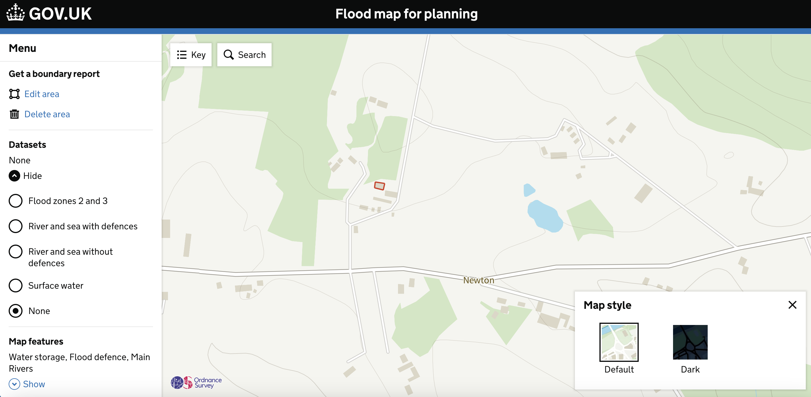

Simple design concepts for complex services.
Creating sustainable, inclusive, accessible designs.
I simplify highly complex services, to create inclusive, accessible, evidence based designs. I design to user needs, and practice ethical and sustainable design.
What I do
Meet business requirements, being led by user needs; to produce multi-service design strategies and user focused designs. I consider the natural world as a stakeholder in every project, using sustainable design principles throughout the design of the service.
How I do it
Create easy to understand visual design artifacts. Design around constraints and evolving policy, taking a systems approach. Use a variety of tools to sketch ideas, concepts and journeys, and prototype in code. Work with and contribute to common componants, and design systems.
Within continuous improvement government service Flood Map For Planning
Within Public Beta govenment service Apply for an Environmental Permit

Fine Art, University of [redacted]
Result 2:1
Department for Environment Food and Rural Affairs (DEFRA)
October 2017 - Present
Environment Agency
October 2016 - October 2017
Bristol City Council
January 2016 - October 2016
Assistant Web Editor and Quality Assurance Officer, Bristol City Council, 2015
Digital Project Manager, Proctor + Stevenson, 2013 - 2015
E-commerce Analyst, Oak Furniture Solutions, 2012 - 2013
Web Properties Manager, Everything Legal, 2012
SEO Copywriter, Everything Legal, 2011
I worked very closely with [redacted] as [redacted] was the senior interaction designer while I was the senior user researcher on an agile team at Defra. It was an absolute pleasure to work with her! [redacted] is able to effortlessly understand complex concepts and design solutions that are simple and clear for users. Users are at the centre of everything [redacted] does. [redacted] comes to every user research session and helps to identify valuable insights that go on to shape her design work. Based on research findings, [redacted] is able to iterate quickly and deliver designs that ensure users succeed. I highly recommend [redacted], [redacted] fantastic to work with!
[redacted] and I worked together as part of a multidisciplinary agile team. [redacted] is a highly skilled, thoughtful and friendly designer who always works with the users' best interests at heart. I was impressed with how quickly [redacted] hit the ground running and picked up the complexities of our team's services. [redacted] is an absolute wizard of prototyping, and her skills made it possible for us to rapidly iterate and test designs with real users so we could deliver the best possible result. [redacted] knowledge, experience and enthusiasm would be an asset to any organisation.